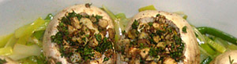

Gefüllte Riesenchampignons
5 von 68-12 riesen champignons sorgfältig vom stiel trennen. stiele fein hacken, zwei gekochte eier und 4 el peterli darunter mischen. in einer bratpfanne in streifen geschnittener lauch im butter andünsten und in einer gratinform verteilen. die gefüllten champignons darauf verteilen. 1,5 dl rahm und ein zerschlagenes ei darüber geben und 5 minuten bei 200 grad gratinieren.
